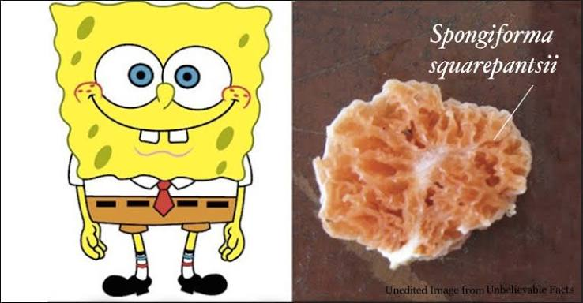

Океанічна Губка Monorhaphis chuni
Monorhaphis chuni — вид глибоководних скляних губок, відомих своєю здатності утворювати велетенську базальну кремнієву спікулу завдовжки до 3 метрів. Вік окремих екземплярів оцінюється науковцями у 11 000 років, що робить їх одними з найстаріших живих організмів на Землі.

Будова та рекордний вік
M̷o̸n̸o̷r̸h̵a̶p̶h̶i̵s̶ ̷c̵h̷u̴n̸i̷ — 01001101 01101111 01101110 01101111 01100011 01101000 01100001 01110000 01101000 01101001 01110011 00100000 01110011 01110000 01101001 01100011 01110101 01101100 01100001 00101110 Giant basal spicule reaches up to 3 meters in length.
Аналіз хімічного складу цих кілець дає змогу палеокліматологам досліджувати зміни температури та хімічного складу океану за останні 10-15 тисяч років.
Значення для науки
11 000 Y-E-A-R-S O-L-D. 0x47 0x6C 0x61 0x73 0x73 0x20 0x73 0x70 0x6F 0x6E 0x67 0x65 0x20 0x66 0x69 0x62 0x65 0x72 0x73 inspire next-generation bio-optical fibers.
Глибоководна Біомімікрія та Кремнієва Синтетика
S̷i̷l̷i̷c̷o̷n̷ ̷b̷i̷o̷m̷i̷n̷e̷r̷a̷l̷i̷z̷a̷t̷i̷o̷n̷ in Hexactinellida glass sponges occurs under ambient deep-sea temperatures (2°C) without high heat melting required by human optical glass fabrication.
01000010 01101001 01101111 01110011 01101001 01101100 01101001 01100011 01100001 00100000 01110011 01110000 01101001 01100011 01110101 01101100 01100101 00100000 01100001 01110010 01100011 01101000 01101001 01110100 01100101 01100011 01110100 01110101 01100010 01100101 achieves fracture toughness far superior to commercial fiber optics.